Visual identity
Zisto
A wordmark built around a tap.
The red “i” echoes the signal from an NFC card. The same shape became the starting point for the logo animation.
Visit Zisto

One accent gives the wordmark a visual link to the product’s tap interaction.